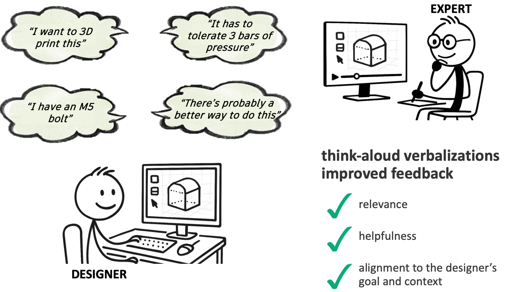
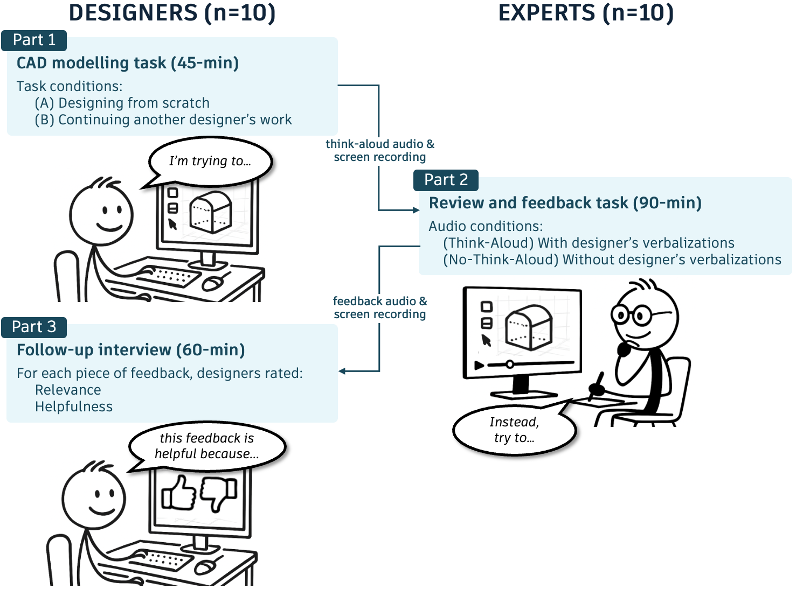
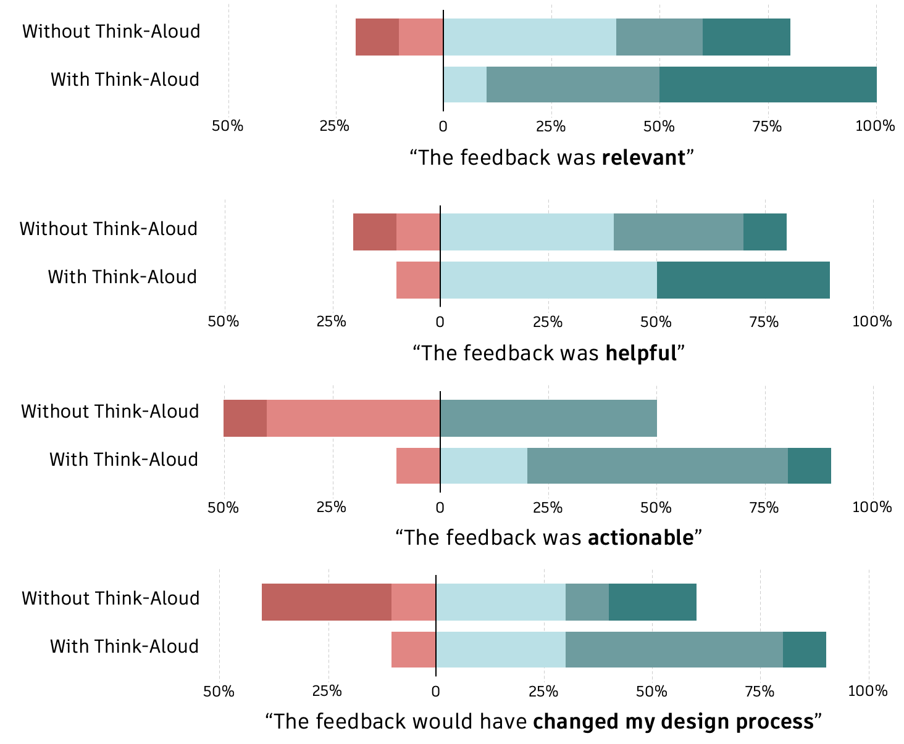

The Missing Context in CAD
An experimental, think-aloud study of context-aware feedback in CAD workflows

Overview
As Generative AI assistance is increasingly integrated into professional tools, one critical question remains: What context does AI need to generate feedback that professionals actually find useful?
During my time at Autodesk, I led a multi-phase research study investigating how designers' real-time verbalizations (think-aloud data) can reveal the hidden cognitive processes behind designers' intentions in CAD, and how we can leverage these insights to improve the quality and relevance of AI feedback in CAD modelling workflows.
Goals
Determine what it is about think-aloud verbalizations that are useful for interpreting a designer's CAD modelling intentions. Specifically:
- What information is invisible from UI traces alone?
- How do experts interpret workflow intent?
- What signals would an AI copilot need to generate context-aware guidance?
- Does richer context actually translate into better outcomes for users?
This research was designed to inform how generative AI could be integrated into professional CAD workflows — beyond surface-level automation.
Process
I designed and executed a three-phase experimental study to simulate and evaluate AI-assisted feedback.

Phase 1: Observing Natural Workflow Context (Think-Aloud Study)
- 10 novice CAD users completed modelling tasks
- Participants verbalized their reasoning while modelling
- We captured screen recordings + synchronized audio
Objective: Identify what designers naturally articulate about:
- Intent
- Confusion
- Uncertainty
- Strategy
- Misconceptions
This phase surfaced cognitive context that is not visible from modelling actions alone.
Phase 2: Expert Review as "Simulated AI"
We recruited CAD experts to review the novice recordings under two conditions:
- Without audio (screen recording only)
- With audio (screen + think-aloud verbalizations)
Experts were instructed to provide feedback as if they were a generative AI assistant embedded in the tool.
This allowed us to isolate:
- What additional insight experts gain from verbal context
- How feedback changes when intent is visible
- What types of guidance become possible
This phase effectively simulated two AI systems:
- One trained only on interaction traces
- One augmented with intent-level signals
Phase 3: Evaluating Feedback Quality
The original novice designers returned to evaluate the expert-generated feedback.
For each piece of feedback, they rated:
- Relevance
- Helpfulness
This allowed us to directly measure whether additional contextual input (think-aloud data) resulted in better user-perceived feedback.
Key Findings
1. UI Traces Alone Are Incomplete
On-screen modelling actions often obscured:
- User intent
- Misconceptions
- Decision rationale
- Points of uncertainty
Experts reviewing without audio frequently misinterpreted the designer's goal.
Implication: AI systems relying solely on interaction logs risk generating misaligned or generic feedback.
2. Verbalizations Expose "Invisible" Context
Think-aloud data surfaced:
- Conceptual misunderstandings
- Competing strategies under consideration
- Task interpretation errors
- Moments of hesitation
With this additional context, experts provided:
- More targeted guidance
- Higher-level conceptual corrections
- Better alignment to user intent
3. Context-Rich Feedback Is Rated as More Helpful
Novice designers rated feedback generated with access to verbal context as:
- More relevant
- More helpful
- Better aligned with their actual goals
This experimentally demonstrated that richer contextual signals can meaningfully improve feedback quality (see bar charts below).
4. Implications for AI Copilot Design
The research suggests that effective AI assistance in professional tools must:
- Infer or capture user intent, not just actions
- Incorporate uncertainty signals
- Distinguish between execution errors and conceptual misunderstandings
- Provide workflow-aware feedback rather than reactive corrections

Impact
This study demonstrated that feedback quality improves when AI systems have access to intent-level signals, not just interaction traces.
Experts reviewing modelling sessions with think-aloud audio generated feedback that novice designers rated as more relevant and helpful than feedback based on screen activity alone. The results show that visible UI actions are insufficient for reliably inferring user goals, misconceptions, or uncertainty.
These findings informed Autodesk's exploration of think-aloud–informed AI assistance for CAD workflows. My work helped clarify:
- What kinds of user reasoning provide meaningful context for AI feedback
- When assistance is likely to be helpful versus disruptive
- Why intent understanding must precede intervention
By grounding these discussions in controlled experimental evidence, this project supported more context-aware AI assistance in professional design tools.
Learn more about Autodesk's Think-Aloud initiative
Reflection
Conducting this research at Autodesk clarified what impactful industry research looks like. The findings directly informed conversations about how AI should integrate into professional design workflows. Seeing experimental evidence shape product thinking reinforced my focus on producing work that is both rigorous and actionable — translating how people reason into guidance teams can build on.